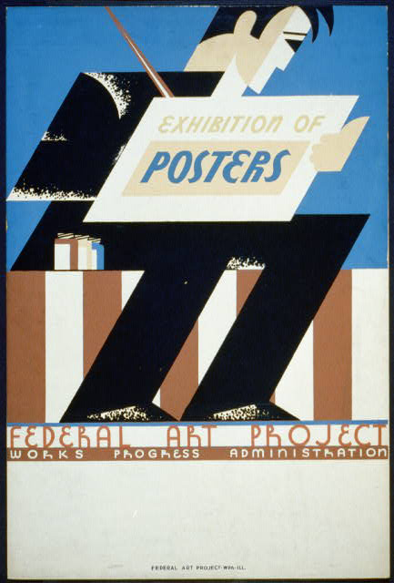

This image shows a man holding up a poster for an exhibition of posters. It seems to be for a federal arts project, the image has a very simple yet sharp style, where almost everything has a sharp edge on it, and not a lot of curves.